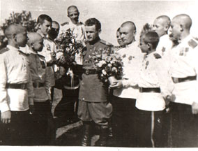

Краснодарское СВУ было создано в соответствии с Постановлением Совет Народных Комиссаров и ЦК ВКП(б) «О неотложных мерах по восстановлению хозяйства в районах, освобожденных от немецкой оккупации» от 21 августа 1943 г. Местом дислокации училища должен был стать город Краснодар, и оно было названо Краснодарским СВУ. Но в то время в краевом центре не нашлось подходящих зданий и суворовское училище было временно размещено в городе Майкопе - административном центре Адыгейской автономной области. В городе фашистами были уничтожены все промышленные предприятия, водопровод и электростанция. Многие здания были сожжены.
Краснодарское СВУ в Майкопе. 1943 г. (Из коллекции Г.П. Толоконникова)
Основным местом размещения училища стал военный городок на берегу реки Белая, ранее принадлежавший окружной снайперской школе. Учебными корпусами стали два красивых здания, расположенные по соседству на улице Пушкина, недалеко от городского парка. В кратчайшие сроки в зданиях были проведены все необходимые ремонтные работы, завезена мебель и посуда, а Кубань и Ставрополье даже подарили училищу 50 лошадей для обучения суворовцев верховой езде. В Майкопе училище находилось с 1943 г. по 1947 г.
Прием воспитанников в училище начался 15 ноября 1943 г. К этому времени приемная комиссия, внимательно рассмотрев 3017 поступивших заявлений, отобрала 440 ребят. Их общего числа принятых 278 были детьми погибших воинов и партизан, 137 - детьми фронтовиков. 99 ребят прибыли в училище прямо с фронта, являясь воспитанниками воинских частей или партизанами. Восемнадцать из них имели боевые награды. 1 мая 1946 г. еще 35 суворовцев участников Великой Отечественной войны были награждены медалью "За победу над Германией".

Командир 1-й роты майор В.К. Волохов среди суворовцев - участников Великой Отечественной войны. 1 мая 1946 г. г. Майкоп. (Из коллекции Г.П. Толоконникова)
Одновременно шел подбор кадров. Особенно тщательно отбирались претенденты на должности командиров рот, офицеров-воспитателей и старших преподавателей, от которых в первую очередь зависели организация и качество учебного процесса. В основном на эти позиции назначались люди с педагогическим опытом и, как правило, имевшие боевой опыт. Многие из них имели ранения и боевые награды – ордена Ленина, Александра Невского, Красной Звезды, Отечественной войны.
К концу ноября 1943 г. все организационные и технические работы были в основном завершены и 1 декабря в училище начался первый учебный год.
20 января 1944 г. Краснодарскому СВУ было вручено Красное Знамя и Грамота Президиума Верховного Совета Союза ССР.
Генерал-майор А.И. Нерченко (1901-1999) (Из коллекции Г.П. Толоконникова)
Первым начальником училища был назначен 42-летний полковник, в последствии генерал-майор, участник Гражданской и Великой Отечественной войн Алексей Иванович Нерченко, с именем которого связаны пять лет формирования и становления училища как военно-учебного заведения.
В 1947 г. училище было передислоцировано в город Дзауджикау (с 1954 г. - Орджоникидзе, с 1990 г. – Владикавказ) - столицу Северо-Осетинской АССР и, разместившись на базе Северо-Осетинского Краснознамённого пехотного училища (до революции там находился Владикавказский кадетский корпус), стало именоваться Северо-Кавказским Суворовским военным училищем (СКСВУ). В 1948 г. состоялся первый выпуск СВУ. В том же году произошло объединение двух училищ в Кавказское Краснознамённое Суворовское офицерское училище (КвСОВУ). Это был своего рода комбинат, в котором воспитанник, окончив суворовское училище, как правило, продолжал учебу в тех же стенах курсантом, а через три года становился офицером. В 1958 г. курсантский батальон был расформирован и училище получило новое наименование - Кавказское Краснознамённое суворовское военное училище, в котором обучались только суворовцы. В 1965 г. оно получило название «Орджоникидзевское» (ОрСВУ), а в июне 1968 г. состоялся последний выпуск суворовцев, и это суворовское училище перестало существовать. На базе Суворовского и общевойскового училищ было создано Орджоникидзевское высшее общевойсковое командное Краснознамённое училище имени Маршала Советского Союза А. И. Ерёменко, которое просуществовало до 1988 г. и, в свою очередь, было расформировано.
За четверть века существования Суворовского военного училища (1943—1968 гг.) был произведен 21 выпуск суворовцев (1862 человека). Подавляющее большинство из них посвятили свою жизнь армии. 7 выпускников получили Золоту звезду Героя. 37 человек стали генералами. Более 100 выпускников, трудясь на гражданском поприще, стали докторами и кандидатами наук, профессорами, академиками.
В апреле 2000 г. в соответствии с приказом Министра обороны РФ во Владикавказе было воссоздано Северо-Кавказское Суворовское военное училище. Однако, в связи с очередной реорганизацией военного образования в России, 25 мая 2012 г. состоялся последний звонок для выпускников 10-го юбилейного выпуска Северо-Кавказского суворовского военного училища и с 1 сентября 2012 г. оно стало именоваться «Владикавказским кадетским корпусом».
В 2014 г. на базе школы-интерната «Владикавказский кадетский корпус» по инициативе Министра обороны Российской Федерации (Приказ МО РФ от 14 мая 2014 № 309) и Правительства Республики Северная Осетия-Алания было вновь создано Северо-Кавказское суворовское военное училище Министерства обороны Российской Федерации.
Севеверо-Кавказское СВУ. Владикавказ.2016 (Из коллекции Г.П Толоконникова)
18 декабря 2015 г. во Владикавказе командующий войсками Южного военного округа генерал-полковник Александр Галкин вручил Северо-Кавказскому суворовскому военному училищу Знамя нового образца.